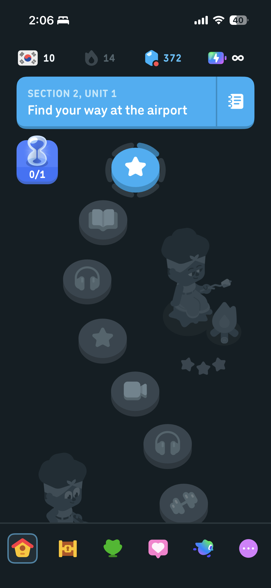
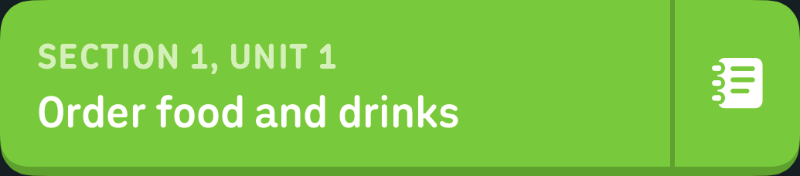
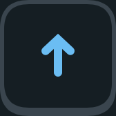

This state is not built yet.
5
1
500
25


Quiz your buddy
CONTINUE
Quiz your buddy
4
of 5
Now see how Otis does.
Quiz type
SEND
Quiz your buddy
Quiz sent
 1
1NUDGE
ANSWER
SEND ONE BACK
NOT NOW
PROTOTYPE

You and Otis both reached
Japanese Score 6!
Japanese Score 6!
CONTINUE
MORE ABOUT SCORE
Buddy Quest
25 days
Complete 20 quizzes together
You
Otis
›
Overview
 1days together
1days together0quizzes in a row
Monthly badges
Stop learning together
Otis is in.
CONTINUE
Who do you want to learn with?
Find your friends
Search by name
CONTINUE
Where do you want to start?
Start from the beginning
Pick up togetherSection 2, Unit 1Recommended
SEND INVITE
CANCEL
25
SIMULATE ANSWER ALL 5

Locked

PROTOTYPE
PROTOTYPE
Course Buddies
Learn a course with a friend.
Path A — Fresh Start
Both new to the language
Start here
Path B — Meet Up
Both already learning
Simulate buttons skip ahead in time.
A1